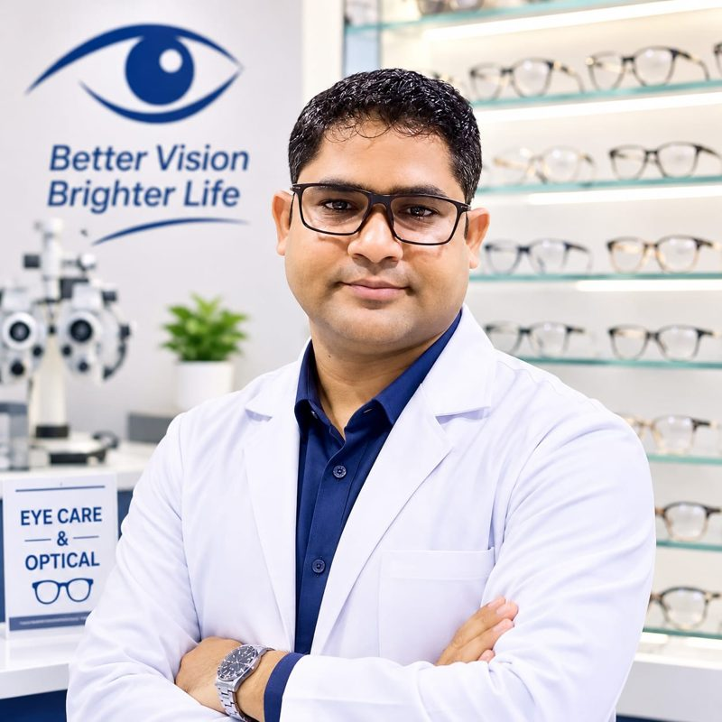

Meet your care team
Personal attention, clear guidance
Get to know Balajii Eye Care and Opticals, serving the Ujhani community.
Dr. Aryendra Singh
Dr. Aryendra Singh is associated with Balajii Eye Care and Opticals in Ujhani. The clinic aims to make eye-care guidance and optical solutions approachable for individuals and families.
- Clear communicationUnderstand your concerns and the next steps in simple language.
- Family-focused approachSupport for children, adults and older family members.
- Practical eyewear guidanceHelp exploring frames, lenses and fit for daily needs.
